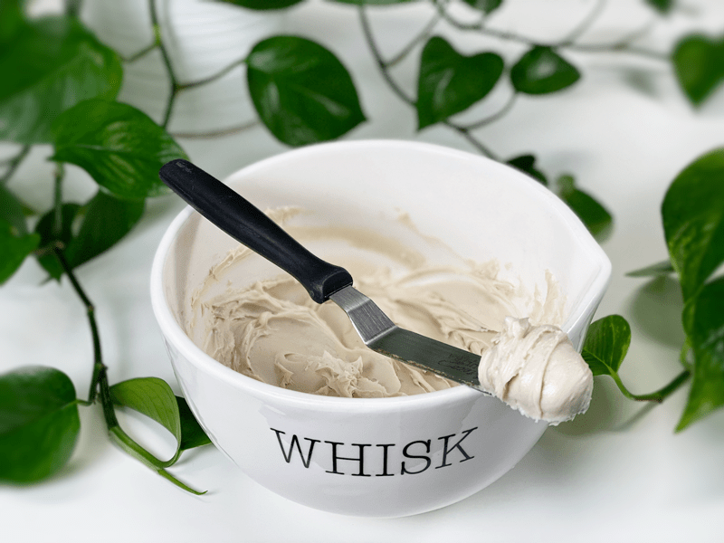
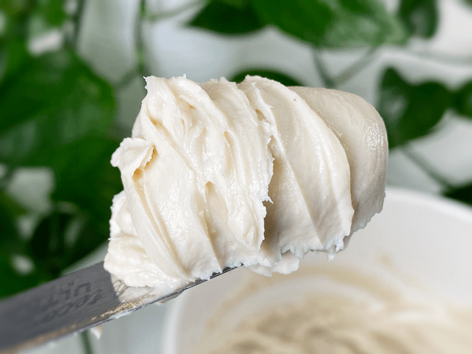
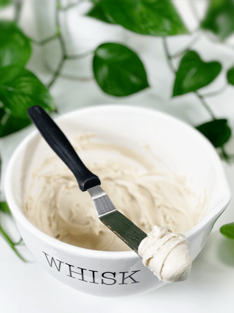
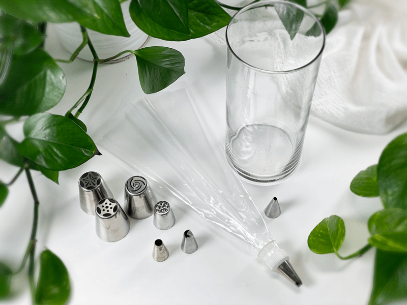
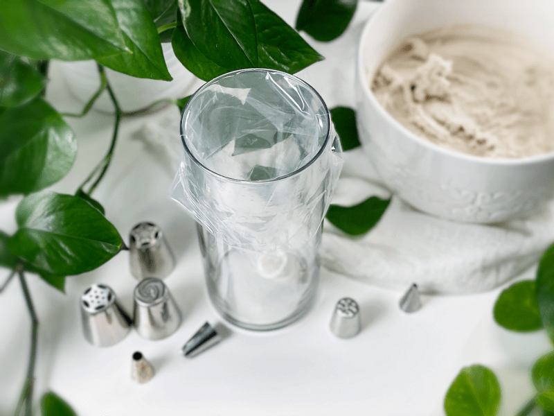
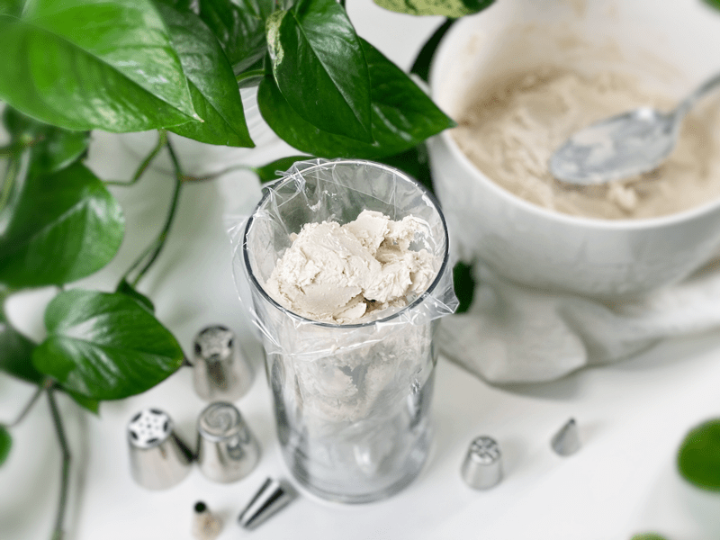
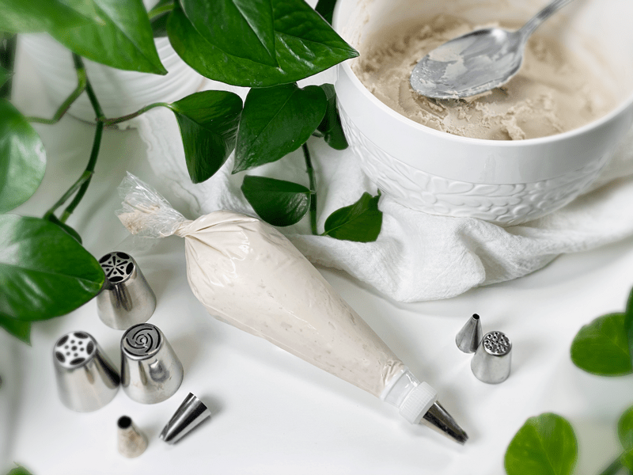

White Cake Frosting
White Cake Frosting – perfect for decorating with
I will start off by boldly stating that this is the perfect raw, vegan frosting for cake decorating. There are many different types of frostings out there that are job-specific. They are used to decorate a variety of desserts, they add another layer of flavor and texture, as well as enabling you to decorate your creation so that it is a treat for the eyes as well as the palate. This frosting is creamy, gently sweetened, and can withstand being at room temp (70 degrees F) for a few hours. That’s pretty amazing actually.

Tips and Techniques
- The key to using this frosting is to chill it after blending all the ingredients together in order to achieve a texture that is firm yet spreadable.
- After making the frosting, it will be very runny. Place it in the freezer to firm then move to the fridge until it is very thick. You can take it out at any time, depending on the consistency that you want for your dessert.
- If you plan on piping with this frosting, fit the piping bag with the desired tip, scoop in the frosting, and then hold it in your hand, allowing your body heat to soften it just enough to pipe it. If at any point the frosting gets too warm and softens, place it back in the fridge to firm up.
- This recipe makes 5 cups of frosting which may seem like a lot. If it is too much for the dessert you are decorating, store the excess frosting in the freezer for future use.
- Frosting colors – If you want to create different colors of frosting, divide the batter right after blending all the ingredients together. Place in small bowls, add your coloring and stir together.
Cashews — Soaked
- Soaking the cashews is key (!) when it comes to making this recipe. It is a step that shouldn’t be skipped.
- The soaking process causes the cashews to swell, giving a bit more volume for the money and it softens them which is vital when creating a creamy texture.
Coconut Milk
- Whether you use fresh blended Young Thai Coconut meat or canned full fat coconut milk, this ingredient helps to give structure, creaminess, and a hint of coconut undertone to the frosting.
- If you can’t find Young Thai coconuts, you can use canned full-fat coconut milk. I always keep a few cans of Native Forest Organic Classic Coconut Milk on hand for such recipes. I realize it isn’t a raw product but I am ok with that.
Sunflower Lecithin
- It is a natural alternative to soy lecithin that works as an emulsifier to bind the fats found in the nuts and oil, helping it to bind with other liquids creating a creamy consistency. However, if over blended, the mixture will separate and lose its creamy consistency.
- Lecithin is a natural preservative and will add shelf life to whatever you’re baking or un-baking. If you look at the ingredients of most commercial goods, you will notice lecithin in almost everything. That is because it will add shelf life to products without adding any harmful chemicals.
- It comes in two forms, powder and liquid. I prefer the raw powdered sunflower lecithin. Watch the wording when buying sunflower lecithin… look for powdered not granules. If you can only get your hands on granules, I recommend powdering it down otherwise it is harder for it to dissolve in the frosting batter.
- Sunflower lecithin is made up of essential fatty acids and B vitamins. It helps to support healthy function of the brain, nervous system, and cell membranes. It also lubricates joints; helps break up cholesterol in the body.

Maple Syrup
- I used maple syrup because it is more alkalizing for the body than most other liquid sweeteners.
- You can use coconut syrup or any other liquid sweetener that you like to use but keep in mind that each different sweetener comes with its own unique flavors and can affect the color of the frosting.
Vanilla & Salt
- Vanilla and salt are added to sweets because they enhance all the other flavors in the recipe.
- You can use vanilla bean (seeds only), powdered vanilla, extract, or vanilla paste.
Coconut Oil
- Coconut oil is the key ingredient when it comes to the overall body of the frosting. Once chilled below 76 degrees it firms up, which is why it makes this frosting perfect for decorating with.
- Look for cold-pressed coconut oil that is packaged in glass containers.
- To melt the oil for this recipe, scoop some out in a measuring cup and place it in the dehydrator to soften. I do this while I am gathering all the ingredients.
I will post photos below of all the different desserts that I have decorated with this frosting. If you have any further questions please leave a comment below in the comment box. blessings, amie sue

Ingredients:
Yields 5 cups
- 2 cups (286 g) cashews, soaked 2+ hours
- 1 3/4 cups (408 g) thick coconut milk, fresh or canned
- 1/2 cup (160 g) maple syrup
- 2 Tbsp (24 g) vanilla extract
- 1/8 tsp (<1 g) Himalayan pink salt
- 1 cup (200 g) cold-pressed coconut oil, melted
- 2 Tbsp (15 g) sunflower lecithin powder (not granules)
Preparation:
- After soaking the cashews, drain and rinse them well. Set aside.
- In a high-speed blender combine in the following order; coconut milk, maple syrup, vanilla, salt, and cashews.
- By placing the liquids in first, it helps the blades spin more easily.
- Blend until creamy and don’t feel any grit in the frosting.
- Depending on the blender, this may take anywhere from 1-5 minutes.
- While the blender is running and a vortex is in motion, drizzle in the coconut oil. Make sure that it gets well incorporated.
- Now add the lecithin and process just until mixed in.
- Place the frosting in an airtight container and slip into the freezer for 2-4 hours or until firm.
- How long it takes to set up will vary as some freezers run colder than others. Also, if the batter got warm during the blending process, it will take longer to cool off.
- If it freezes solid, that’s ok. Take it out and let it soften a tad before using, depending on the usage.
- Storage and shelf-life:
- Regardless of where you store the frosting, make sure you keep it in an airtight container. After you place the frosting in the container, smooth out the top of it and press plastic wrap on top so it isn’t exposed to air.
- In the fridge for 3-5 days.
- In the freezer for 1-3 months.
Additional Cake Tips:
- How to frost a cake. Click here.
- How to slice a cake. Click here.
- How much frosting is needed for a cake? Click here.
-

-
To fill a piping bag, attach the coupler and piping tip.
-

-
Slip the bag into a glass and fold the opening of the bag over the edges of the glass.
-

-
Load with frosting.
-

-
Remove air bubbles and twist closed. Now you are ready!
Examples of how I have used this frosting —
© AmieSue.com